🐟 Weighted Average Detection Efficiency (WADE) Positioning Analysis
Positioning Animals with Acoustic Telemetry Using Detection Range Information - Simulation Application
Jake Brownscombe
2026-03-22
Source:vignettes/WADE_Simulation.Rmd
WADE_Simulation.RmdAnalysis Overview
This tutorial demonstrates the Weighted Average Detection Efficiency (WADE) approach for animal positioning using passive acoustic telemetry. It uses detection range information to generate estimates of probable animal locations based on detection patterns, which is useful for estimating space use (home range) and habitat selection. This approach using simulated data is a useful exercise to assess positioning accuracy and optimal settings relative to known tracks, which may be useful to conduct prior to field data applications where positioning can be influenced by system design, detection range, and animal behaviour.
📡 Receiver Array Design
Generate Optimal Array Configuration
# Generate regularly spaced receiver array
# Note: actual number may vary slightly from n_points to optimize spacing
points_regular <- generate_exact_regular_points(
depth_raster,
n_points = 80,
seed = 123
)
# Visualize array design
plot_points_on_input(depth_raster, points_regular) +
ggtitle("Receiver Array Design",
subtitle = paste("Regular spacing with", nrow(points_regular), "receivers")) +
theme_minimal()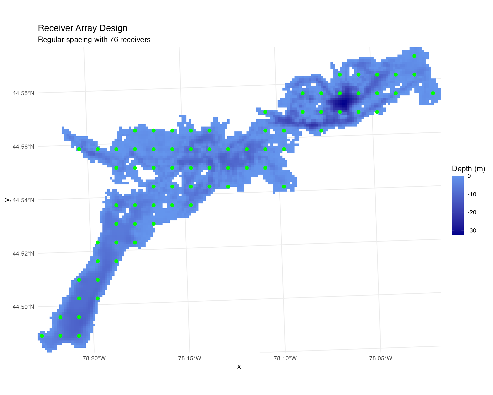
Calculate Station Distances
# Calculate cost-weighted distances between all grid cells and receivers
station_distances <- calculate_station_distances(
raster = depth_raster,
receiver_frame = points_regular,
max_distance = 30000, # Maximum distance to consider (30 km)
station_col = "station_id"
)## Distance calculations complete!
## Result contains 366168 station-cell combinations
## Station IDs ( integer ): 1, 2, 3, 4, 5 ...
str(station_distances) #contains shortest path, euclidean distances, tortuosity, and barrier info## 'data.frame': 366168 obs. of 9 variables:
## $ cell_id : int 156 157 158 159 160 321 322 323 324 325 ...
## $ x : num 735854 735954 736054 736154 736254 ...
## $ y : num 4941891 4941891 4941891 4941891 4941891 ...
## $ raster_value : num -0.03541 -0.25052 -0.85191 -0.4325 -0.00829 ...
## $ station_no : int 1 1 1 1 1 1 1 1 1 1 ...
## $ cost_distance : num 20488 20588 20688 20788 20888 ...
## $ straight_distance: num 19477 19556 19635 19715 19794 ...
## $ tortuosity : num 1.05 1.05 1.05 1.05 1.06 ...
## $ crosses_barrier : logi TRUE TRUE TRUE TRUE TRUE TRUE ...The calculate_station_distances() function automatically
computes barrier information (whether line-of-sight crosses land) that
can be used to prevent unrealistic detections through obstacles.
📊 Detection Range Modeling
Create Depth-Dependent Detection Model
# Generate logistic detection efficiency model with depth-dependency
logistic_DE <- create_logistic_curve_depth(
min_depth = 1,
max_depth = 35,
d50_min_depth = 400, # 50% detection at 400m in shallow water
d95_min_depth = 800, # 95% detection at 800m in shallow water
d50_max_depth = 750, # 50% detection at 750m in deep water
d95_max_depth = 1500, # 95% detection at 1500m in deep water
plot = TRUE,
return_model = TRUE,
return_object = TRUE
)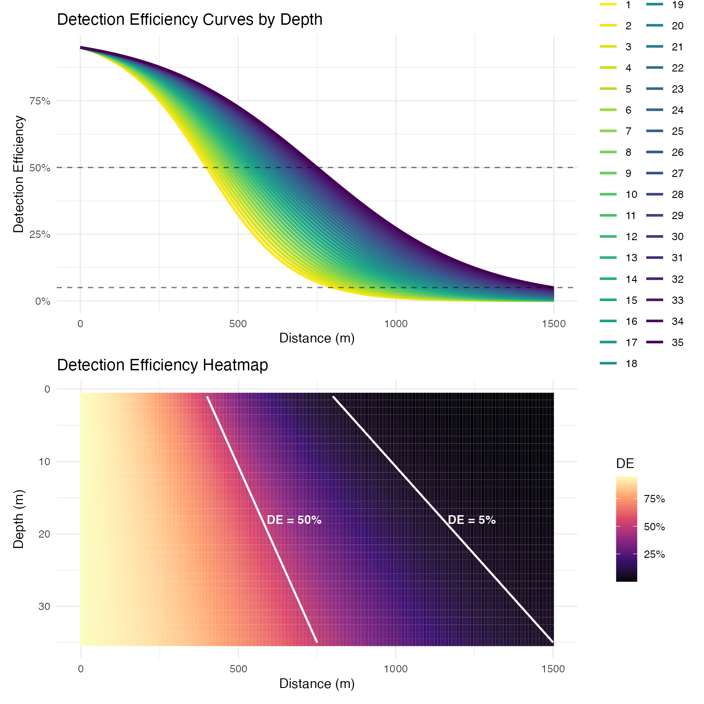
##
## Call:
## stats::glm(formula = DE ~ dist_m * depth_m, family = stats::binomial(link = "logit"),
## data = predictions)
##
## Deviance Residuals:
## Min 1Q Median 3Q Max
## -0.124692 -0.019879 0.006263 0.023533 0.050386
##
## Coefficients:
## Estimate Std. Error z value Pr(>|z|)
## (Intercept) 2.825e+00 1.331e-01 21.228 <2e-16 ***
## dist_m -6.738e-03 2.256e-04 -29.871 <2e-16 ***
## depth_m 5.807e-03 6.209e-03 0.935 0.35
## dist_m:depth_m 8.277e-05 9.398e-06 8.807 <2e-16 ***
## ---
## Signif. codes: 0 '***' 0.001 '**' 0.01 '*' 0.05 '.' 0.1 ' ' 1
##
## (Dispersion parameter for binomial family taken to be 1)
##
## Null deviance: 6031.202 on 10534 degrees of freedom
## Residual deviance: 11.686 on 10531 degrees of freedom
## AIC: 4332.3
##
## Number of Fisher Scoring iterations: 6Apply Detection Model to System
# Predict detection efficiency for all receiver-cell combinations
station_distances$DE_pred <- stats::predict(
logistic_DE$log_model,
newdata = station_distances %>%
dplyr::rename(dist_m = cost_distance) %>%
dplyr::mutate(depth_m = abs(raster_value)),
type = "response"
)
# Visualize detection field for example station
ggplot(station_distances %>% dplyr::filter(station_no == 10),
aes(x, y, fill = DE_pred)) +
geom_raster() +
scale_fill_viridis_c(option = "magma", name = "Detection\nEfficiency") +
ggtitle("Detection Efficiency Field (Station 10)",
subtitle = "Probability of detection decreases with distance and depth") +
theme_minimal() +
coord_sf()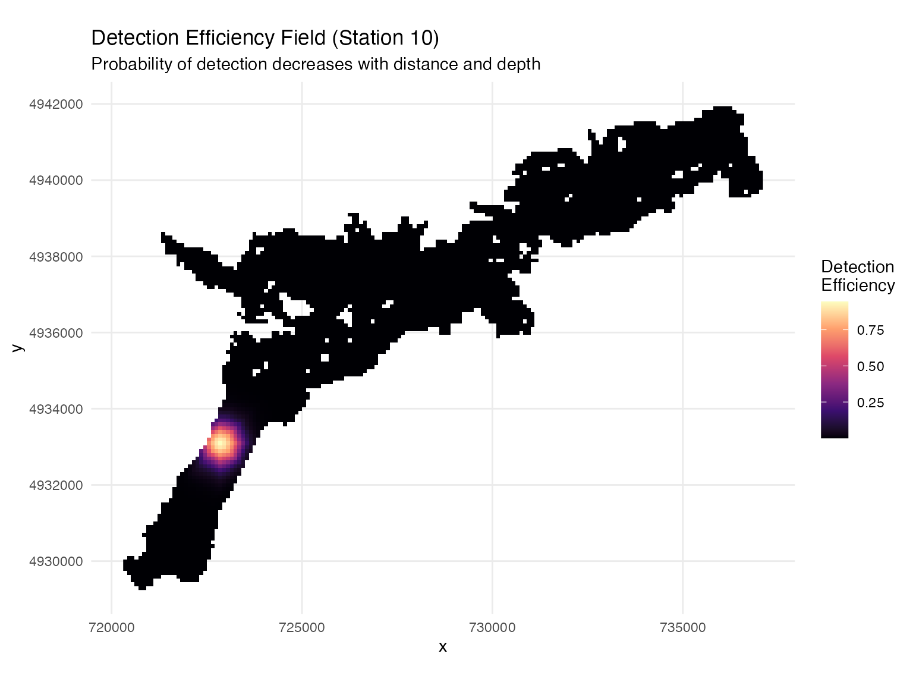
System-Wide Detection Coverage
# Calculate cumulative system detection efficiency
# This will be used for generating absence points later
# include_barriers = TRUE incorporates barrier masking
system_DE <- calculate_detection_system(
distance_frame = station_distances,
receiver_frame = points_regular,
model = logistic_DE$log_model,
output_type = "cumulative", # Cumulative probability across all receivers
plots = TRUE,
include_barriers = TRUE # Prevent detections through land obstacles
)## Barrier masking enabled - will set DE = 0 where paths cross barriers
## Using all 76 stations (no date filtering)
## Calculating detection probabilities...
## Using existing DE_pred column
## Masked 253006 of 366168 station-cell pairs (69.1%) due to barriers
## Calculating system probabilities...
## Creating plots...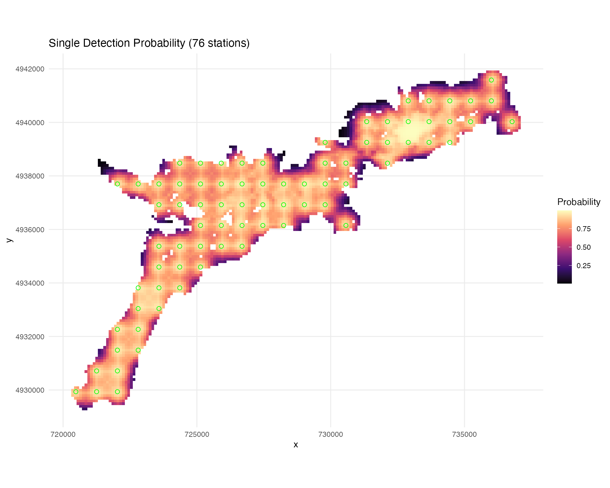
##
## === Detection System Summary ===
## Target date: All dates
## Active stations: 76
## Mean cumulative detection probability: 0.748🐟 Fish Movement Simulation
Generate Realistic Fish Tracks
# Set start time for maintaining temporal structure
start_time <- as.POSIXct("2025-07-15 12:00:00", tz = "UTC")
# Simulate correlated random walks with detection events
fish_simulation <- simulate_fish_tracks(
raster = depth_raster,
station_distances = station_distances, # Contains DE_pred values
n_paths = 5, # Number of fish to simulate
n_steps = 480, # Steps per fish (480 * 3 min = 24 hours)
step_length_mean = 50, # Mean step length (meters)
step_length_sd = 30, # Step length standard deviation
time_step = 180, # Time between steps (seconds)
seed = 123,
start_time = start_time,
include_barriers = TRUE # Prevent detections through land
)## Mode: basic (step_mean = 50 , step_sd = 30 )
## Barrier masking enabled: DE will be set to 0 where crosses_barrier = TRUE
## Preprocessing spatial lookup table...
## Generating path 1 of 5
## Generating path 2 of 5
## Generating path 3 of 5
## Generating path 4 of 5
## Generating path 5 of 5
## Simulation complete!
## Start time: 2025-07-15 12:00:00 UTC
## End time: 2025-07-16 12:00:00 UTCVisualize Tracks and Detections
# Plot fish tracks with detection events
plot_fish_tracks(
fish_simulation,
depth_raster,
points_regular,
show_detections = TRUE
) +
ggtitle("Simulated Fish Tracks with Detection Events",
subtitle = "Lines = movement paths, Points = detections, Triangles = receivers") +
theme_minimal()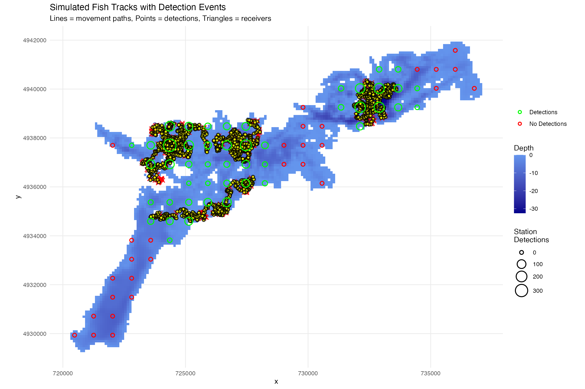
Analyze Detection Performance
# Comprehensive detection performance analysis
detection_performance <- analyze_detection_performance(fish_simulation,
create_plots = TRUE,
display_plots = FALSE)## Analyzing detection performance...
##
## === DETECTION SUMMARY REPORT ===
##
## OVERALL DETECTION PERFORMANCE:
## Total steps simulated: 2405
## Steps with detections: 1884
## Overall detection rate: 78.3%
##
## DETECTION RATE STATISTICS ACROSS PATHS:
## Mean detection rate: 78.3%
## Median detection rate: 79.0%
## Range: 68.6% - 90.2%
## Standard deviation: 8.1%
##
## DETECTION RATE BY INDIVIDUAL PATH:
## Path 1: 355/481 steps detected (73.8%)
## Path 2: 434/481 steps detected (90.2%)
## Path 3: 330/481 steps detected (68.6%)
## Path 4: 380/481 steps detected (79.0%)
## Path 5: 385/481 steps detected (80.0%)
##
##
## Creating visualization plots...
# Display performance plots in grid
performance_plots <- (detection_performance$plots$by_path +
detection_performance$plots$by_station) /
(detection_performance$plots$distribution +
detection_performance$plots$time_series)
performance_plots +
plot_annotation(
title = "Detection Performance Analysis",
subtitle = "Spatial and temporal patterns in detection probability"
)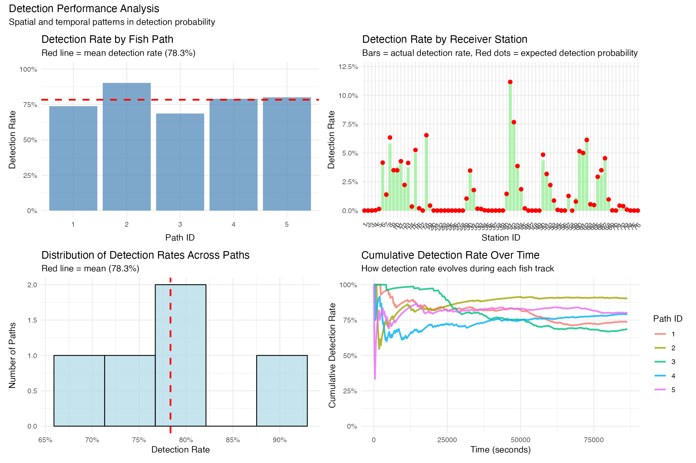
🎯 WADE Position Estimation
Barrier Masking in WADE: The barrier masking feature prevents position estimates in areas separated from receivers by land obstacles. Both detection and non-detection probabilities account for barriers, resulting in more accurate position estimates that respect physical geography.
Calculate Position Probabilities
# Apply WADE algorithm to estimate fish positions
positioning_results <- calculate_fish_positions(
station_detections = fish_simulation$station_detections,
station_distances_df = station_distances,
station_info = points_regular,
de_model = logistic_DE$log_model,
integration_method = "subtractive", # "subtractive", "multiplicative", or "additive"
max_non_detection_distance = 2000, # Maximum range for non-detection inference
weighting_method = "normalize_stations", # Normalize across stations
# weighting_method = "information_theoretic", # Alternative option
normalization_method = "min_max", # Min-max normalization
fish_id_col = "path_id",
time_col = "datetime",
time_aggregation = "day", # Daily position estimates
station_col = "station_id",
include_barriers = TRUE, # Account for barriers in positioning
verbose = TRUE
)## Barrier masking enabled: DE will be set to 0 where crosses_barrier = TRUE
## Converting sf object to station_info data frame...
## Using station_info with static station locations and DE predictions...
## Timezone info: Input timezone = UTC , processing in UTC
## Creating receiver_stations from station_info coordinates...
## Auto-detected CRS: EPSG:32617 (UTM Zone 17N) based on coordinate ranges
## Created receiver_stations with 76 stations from station_info
## === CALCULATING FISH POSITIONS ===
## Step 1: Standardizing columns and creating time periods...
## Step 2: Aggregating detection data...
## Step 3: Creating non-detection data...
## Step 4: Aggregating non-detection data...
## Step 5: Applying normalize_stations weighting...
## Using station normalization for detections, raw DE for non-detections
## Step 6: Combining detection and non-detection data...
## Step 7: Calculating position probabilities...
## Step 8: Adding time metadata and station coordinates...
## === POSITIONING COMPLETE ===
## Fish tracked: 5
## Time periods: 2
## Time aggregation: day
## Spatial cells: 4818
## Position estimates generated: 48180Visualize Position Estimates
# Select example fish and time for visualization
fish_select <- 1
time_select <- "2025-07-15"
# Create three-panel plot showing different probability surfaces
p1 <- plot_fish_positions(
positioning_results = positioning_results,
depth_raster_df = depth_raster,
fish_select = fish_select,
time_select = time_select,
plot_type = "detection",
prob_threshold = 0.01, # Show cells above 1% probability
track_data = fish_simulation$tracks
) + ggtitle("Detection-Based Positioning",
subtitle = "Probability surface from detected stations")
p2 <- plot_fish_positions(
positioning_results = positioning_results,
depth_raster_df = depth_raster,
fish_select = fish_select,
time_select = time_select,
plot_type = "non_detection",
track_data = fish_simulation$tracks
) + ggtitle("Non-Detection-Based Positioning",
subtitle = "Inference from silent stations")
p3 <- plot_fish_positions(
positioning_results = positioning_results,
depth_raster_df = depth_raster,
fish_select = fish_select,
time_select = time_select,
plot_type = "integrated",
prob_threshold = 0.01,
detection_threshold = 0.01, # Filter to detection area
track_data = fish_simulation$tracks
) + ggtitle("Integrated Position Estimate",
subtitle = "Combined detection and non-detection evidence")
# Display all three plots
p1 + p2 + p3 + plot_spacer() + plot_layout(ncol=2)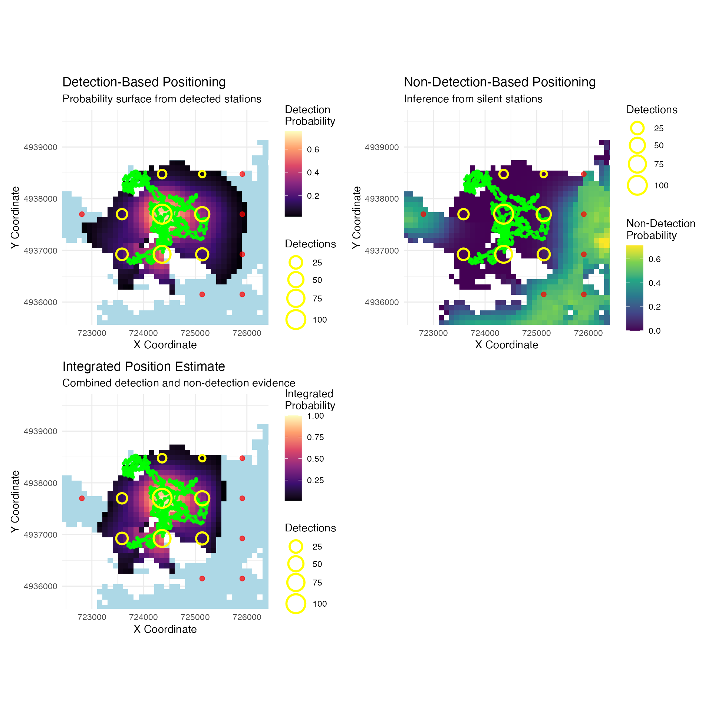
🏡 Space Use Analysis
Generate Position Points for Analysis
# Sample points from position probability surfaces
# Initially without threshold for optimization analysis
position_points <- sample_points_from_probabilities(
positioning_results,
prob_column = "weighted_mean_DE_normalized_scaled",
n_points = 1000,
min_prob_threshold = 0.0, # No threshold initially
crs = 32617,
by_group = TRUE, # Sample per fish-time combination
seed = 456
)## Using probability column: weighted_mean_DE_normalized_scaled
## Original data: 48180 cells
## After probability thresholds ( 0 < prob < 1 ): 30120 cells
##
## Processing 10 fish-time combinations
## Fish 1 - Time 2025-07-15 : sampled 1000 points from 2352 cells
## Fish 1 - Time 2025-07-16 : sampled 1000 points from 2777 cells
## Fish 2 - Time 2025-07-15 : sampled 1000 points from 2897 cells
## Fish 2 - Time 2025-07-16 : sampled 1000 points from 2978 cells
## Fish 3 - Time 2025-07-15 : sampled 1000 points from 3054 cells
## Fish 3 - Time 2025-07-16 : sampled 1000 points from 2957 cells
## Fish 4 - Time 2025-07-15 : sampled 1000 points from 4019 cells
## Fish 4 - Time 2025-07-16 : sampled 1000 points from 3613 cells
## Fish 5 - Time 2025-07-15 : sampled 1000 points from 2353 cells
## Fish 5 - Time 2025-07-16 : sampled 1000 points from 3120 cells
##
## === SAMPLING SUMMARY ===
## Total points sampled: 10000
## Probability column: weighted_mean_DE_normalized_scaled
## Fish ID(s): 1, 2, 3, 4, 5
## Time periods: 2
## Fish-time combinations: 10
## Sampled probability range: 0 to 0.991
## Mean probability: 0.1296
# Extract coordinates from sf object
position_points_coords <- position_points %>%
dplyr::mutate(
coords = sf::st_coordinates(geometry),
x = coords[,1],
y = coords[,2]
) %>%
sf::st_drop_geometry() %>%
dplyr::select(-coords)Initial Space Use Estimates
options(positionR.verbose = FALSE)
# Calculate positioning-based space use with initial threshold
position_space_use_results <- calculate_space_use(
track_data = position_points_coords,
prob_column = "probability",
prob_thresholds = 0.2, # Initial test threshold
by_fish = TRUE,
by_time_period = TRUE,
time_aggregation = "day",
methods = c("constrained_convex_hull"),
grid_resolution = 100,
reference_raster = depth_raster
)
# Calculate actual track-based space use (ground truth)
track_space_use_results <- calculate_space_use(
track_data = fish_simulation$tracks,
by_fish = TRUE,
by_time_period = TRUE,
time_aggregation = "day",
methods = c("grid_cell_count", "constrained_convex_hull"),
grid_resolution = 100,
reference_raster = depth_raster
)Visual Comparison of Space Use
# Compare positioning vs track space use
fish_select <- 1
time_select <- "2025-07-15"
p1 <- plot_space_use(
position_space_use_results,
plot_type = "map",
fish_select = fish_select,
time_select = time_select,
method_select = "constrained_convex_hull",
track_data = fish_simulation$tracks,
background_raster = depth_raster
) + ggtitle("Constrained Convex Hull Space Use (Positioning)")
p2 <- plot_space_use(
track_space_use_results,
plot_type = "map",
track_data = fish_simulation$tracks,
fish_select = fish_select,
time_select = time_select,
method_select = "constrained_convex_hull",
background_raster = depth_raster
) + ggtitle("Constrained Convex Hull Space Use (Track)",
subtitle = "Ground truth from actual movement")
p1 | p2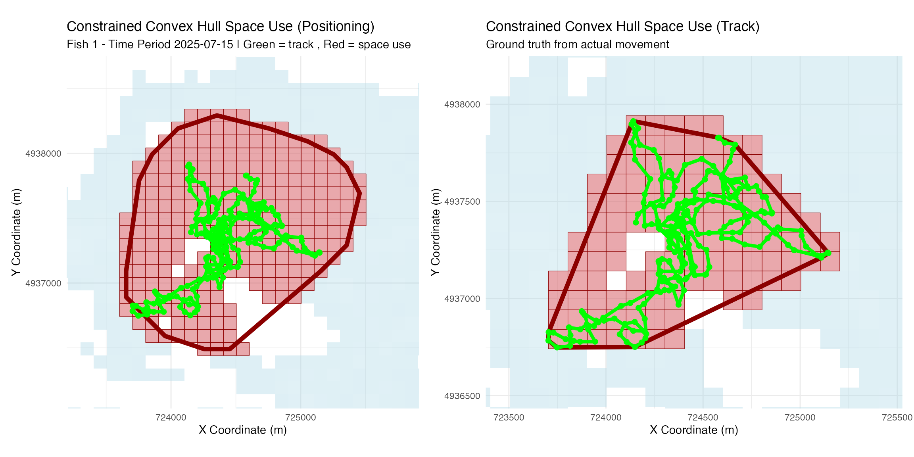
🎚️ Probability Threshold Optimization
Multi-Threshold Analysis
options(positionR.verbose = FALSE)
# Test multiple probability thresholds
multi_results <- calculate_space_use(
track_data = position_points_coords,
prob_column = "probability",
by_fish = TRUE,
by_time_period = TRUE,
prob_thresholds = c(0, 0.1, 0.2, 0.3, 0.4, 0.5, 0.6),
methods = c("constrained_convex_hull"),
reference_raster = depth_raster
)
# Compare against track-based space use
# Note: Track overlap calculation may have issues
comparison <- compare_space_use_thresholds(
multi_threshold_results = multi_results,
reference_tracks = fish_simulation$tracks,
reference_space_use = track_space_use_results
)## === SPACE USE THRESHOLD COMPARISON ===
## Analyzing 7 thresholds: 0, 0.1, 0.2, 0.3, 0.4, 0.5, 0.6
## Analyzing methods: constrained_convex_hull
##
## Processing threshold: 0
## Method: constrained_convex_hull
##
## Processing threshold: 0.1
## Method: constrained_convex_hull
##
## Processing threshold: 0.2
## Method: constrained_convex_hull
##
## Processing threshold: 0.3
## Method: constrained_convex_hull
##
## Processing threshold: 0.4
## Method: constrained_convex_hull
##
## Processing threshold: 0.5
## Method: constrained_convex_hull
##
## Processing threshold: 0.6
## Method: constrained_convex_hull
##
## Creating visualization plots...
##
## === THRESHOLD COMPARISON COMPLETE ===
## Thresholds analyzed: 7
## Methods analyzed: 1
## Fish-time combinations: 9.428571
# Display optimization results
print(comparison$plots$area_ratio_boxplot) 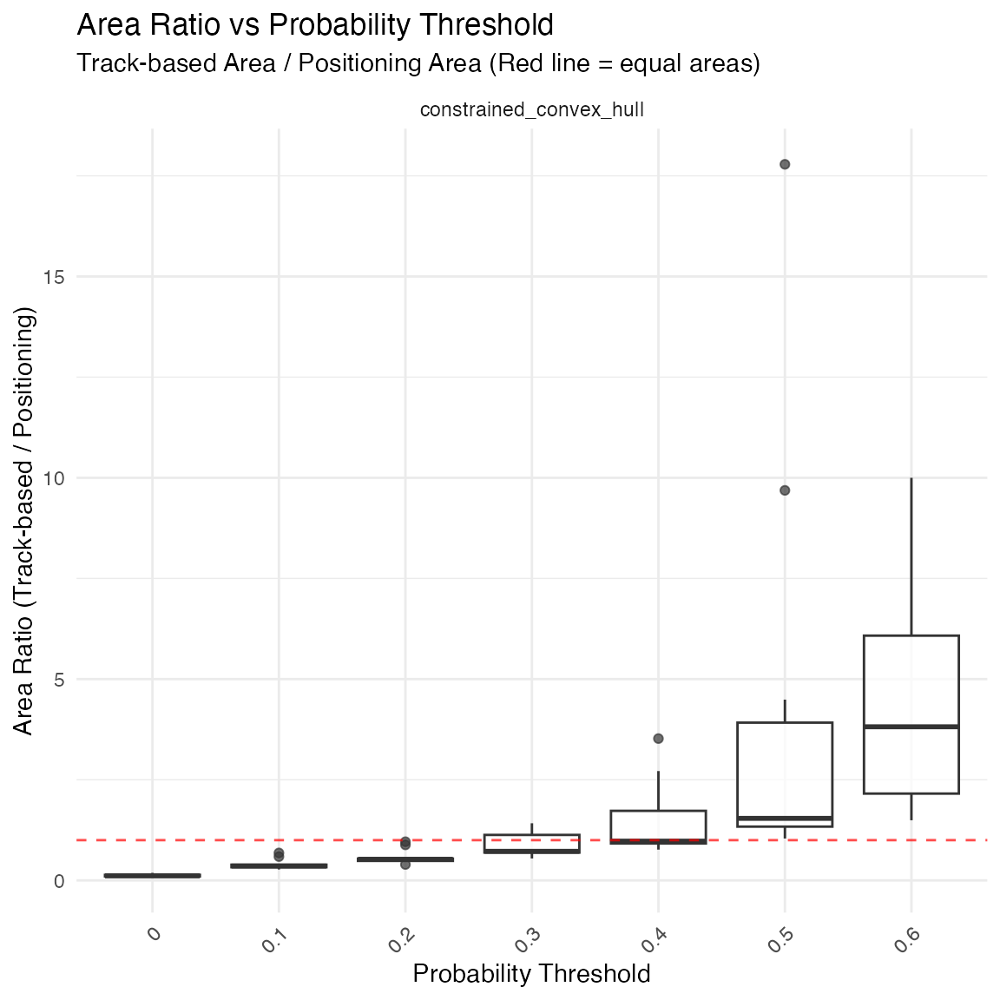
print(comparison$plots$track_overlap_boxplot)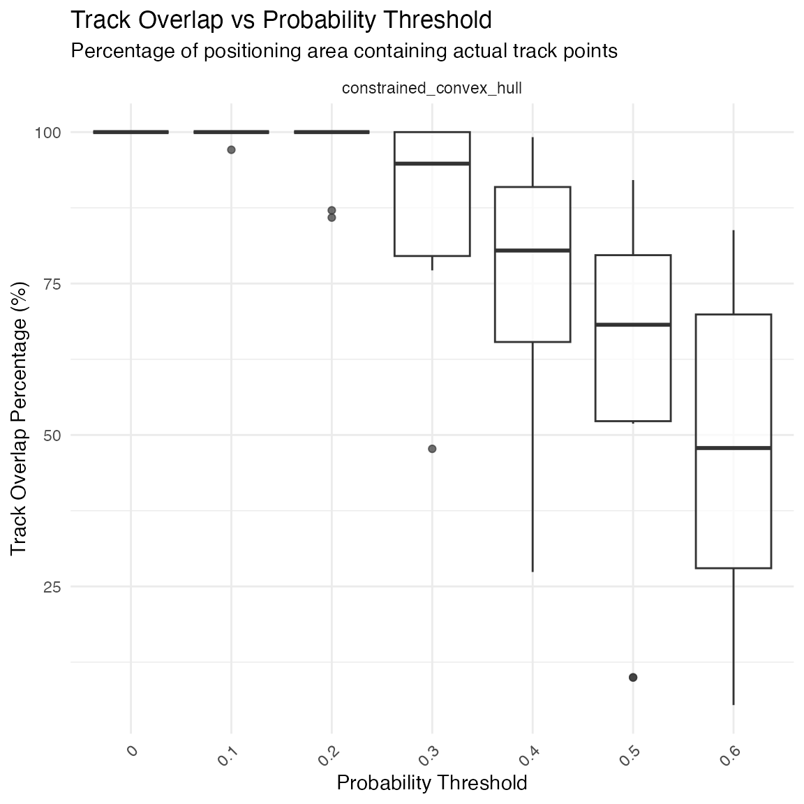
Final Space Use with Optimal Threshold
# Calculate space use with optimized threshold
space_use_0.4 <- calculate_space_use(
track_data = position_points_coords,
prob_column = "probability",
by_fish = TRUE,
by_time_period = TRUE,
prob_thresholds = 0.4, # Optimal threshold from analysis
methods = c("constrained_convex_hull"),
reference_raster = depth_raster
)
# Visualize final space use estimates
ggplot(space_use_0.4$space_use_estimates,
aes(as.factor(fish_id), constrained_convex_hull_area_hectares)) +
geom_boxplot(fill = "steelblue", alpha = 0.7) +
geom_jitter(width = 0.1, alpha = 0.5, size = 2) +
theme_minimal() +
labs(
title = "Positioning Estimates of Space Use",
subtitle = "Using optimized probability threshold (0.4)",
x = "Fish ID",
y = "Space Use (hectares)"
)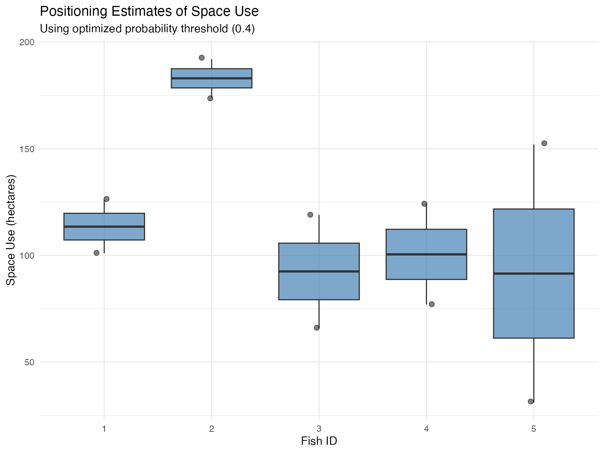
# Summary statistics
space_summary <- space_use_0.4$space_use_estimates %>%
group_by(fish_id) %>%
summarise(
mean_area = mean(constrained_convex_hull_area_hectares),
sd_area = sd(constrained_convex_hull_area_hectares),
.groups = 'drop'
)🌿 Habitat Selection Analysis
Generate Presence Points for Habitat Analysis
# Note: Need to integrate filtering approaches from field applications
# Generate presence points using optimal threshold
position_points <- sample_points_from_probabilities(
positioning_results,
prob_column = "weighted_mean_DE_normalized_scaled",
n_points = 1000,
min_prob_threshold = 0.4, # Based on optimization results
crs = 32617,
by_group = TRUE,
seed = 456
)## Using probability column: weighted_mean_DE_normalized_scaled
## Original data: 48180 cells
## After probability thresholds ( 0.4 < prob < 1 ): 1022 cells
##
## Processing 10 fish-time combinations
## Fish 1 - Time 2025-07-15 : sampled 1000 points from 79 cells
## Fish 1 - Time 2025-07-16 : sampled 1000 points from 117 cells
## Fish 2 - Time 2025-07-15 : sampled 1000 points from 155 cells
## Fish 2 - Time 2025-07-16 : sampled 1000 points from 155 cells
## Fish 3 - Time 2025-07-15 : sampled 1000 points from 60 cells
## Fish 3 - Time 2025-07-16 : sampled 1000 points from 105 cells
## Fish 4 - Time 2025-07-15 : sampled 1000 points from 62 cells
## Fish 4 - Time 2025-07-16 : sampled 1000 points from 112 cells
## Fish 5 - Time 2025-07-15 : sampled 1000 points from 146 cells
## Fish 5 - Time 2025-07-16 : sampled 1000 points from 31 cells
##
## === SAMPLING SUMMARY ===
## Total points sampled: 10000
## Probability column: weighted_mean_DE_normalized_scaled
## Fish ID(s): 1, 2, 3, 4, 5
## Time periods: 2
## Fish-time combinations: 10
## Sampled probability range: 0.4004 to 0.991
## Mean probability: 0.559
# Visualize presence points
raster_df <- as.data.frame(depth_raster, xy = TRUE)
ggplot() +
geom_raster(data = raster_df, aes(x = x, y = y, fill = layer)) +
scale_fill_gradient(low = "blue4", high = "cornflowerblue",
na.value = "transparent", name = "Depth (m)") +
geom_sf(data = position_points %>%
filter(fish_id == 1 & time_period_label == "2025-07-15"),
aes(color = probability),
alpha = 0.5, size = 1) +
scale_color_viridis_c(name = "Probability", option = "magma") +
theme_minimal() +
labs(title = "Presence Points",
subtitle = "Fish 1, July 15 - Points weighted by position probability")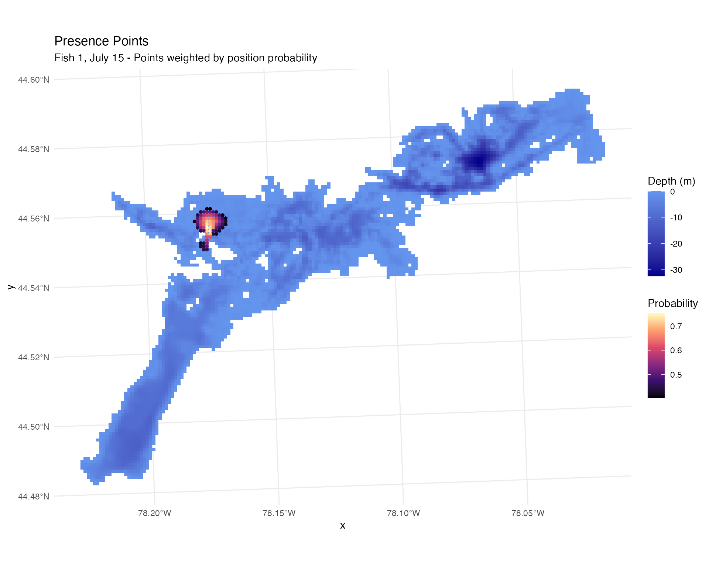
Generate Absence Points
System DE-Weighted Absences
# Generate absences weighted by system detection efficiency
absence_points <- sample_points_from_system_de(
system_DE,
position_points = position_points,
n_points = 1000,
min_prob_threshold = 0.05,
crs = 32617,
seed = 123
)## Using probability column: cumulative_prob
## Original data: 4818 cells
## Found 5 fish ID(s) in position_points template
## Found 2 time period(s) in position_points template
## Note: Template contains fish/time information, but system_de data lacks these columns.
## Will replicate sampling across template groups.## After probability thresholds ( 0.05 < prob < 1 ): 4731 cells
##
## Replicating sampling across template fish-time combinations
## Found 10 unique fish-time combinations in template
## fish_id = 1, time_period = 1752537600, time_period_posix = 1752537600, time_period_label = 2025-07-15 : replicated 1000 points
## fish_id = 1, time_period = 1752624000, time_period_posix = 1752624000, time_period_label = 2025-07-16 : replicated 1000 points
## fish_id = 2, time_period = 1752537600, time_period_posix = 1752537600, time_period_label = 2025-07-15 : replicated 1000 points
## fish_id = 2, time_period = 1752624000, time_period_posix = 1752624000, time_period_label = 2025-07-16 : replicated 1000 points
## fish_id = 3, time_period = 1752537600, time_period_posix = 1752537600, time_period_label = 2025-07-15 : replicated 1000 points
## fish_id = 3, time_period = 1752624000, time_period_posix = 1752624000, time_period_label = 2025-07-16 : replicated 1000 points
## fish_id = 4, time_period = 1752537600, time_period_posix = 1752537600, time_period_label = 2025-07-15 : replicated 1000 points
## fish_id = 4, time_period = 1752624000, time_period_posix = 1752624000, time_period_label = 2025-07-16 : replicated 1000 points
## fish_id = 5, time_period = 1752537600, time_period_posix = 1752537600, time_period_label = 2025-07-15 : replicated 1000 points
## fish_id = 5, time_period = 1752624000, time_period_posix = 1752624000, time_period_label = 2025-07-16 : replicated 1000 points
##
## === SAMPLING SUMMARY ===
## Total points sampled: 10000
## Probability column: cumulative_prob
## Groups: 10
## Sampled probability range: 0.0901 to 0.9957
## Mean probability: 0.8101
ggplot() +
geom_raster(data = raster_df, aes(x = x, y = y, fill = layer)) +
scale_fill_gradient(low = "blue4", high = "cornflowerblue",
na.value = "transparent", name = "Depth (m)") +
geom_sf(data = absence_points %>%
filter(fish_id == 1 & time_period_label == "2025-07-15"),
aes(color = probability),
alpha = 1, size = 0.8) +
scale_color_viridis_c(name = "Cumulative\nProbability") +
theme_minimal() +
labs(title = "Absence Points (System DE Weighted)",
subtitle = "Sampling probability proportional to detection coverage")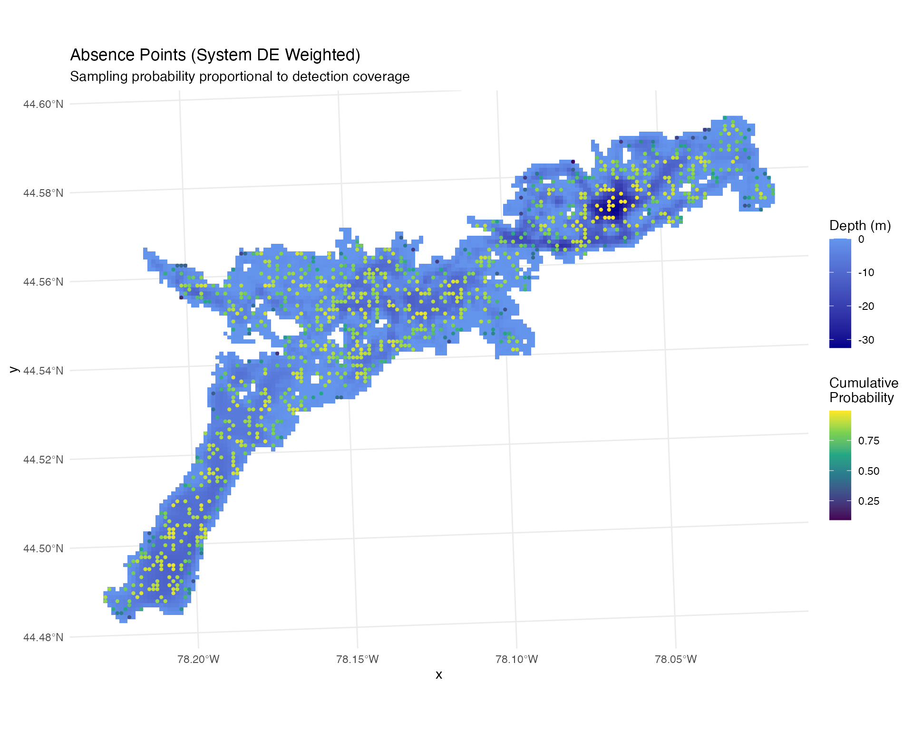
Uniform Random Absences
# Generate uniform absences across entire system
absence_points_uniform <- sample_points_from_system_de(
system_DE,
position_points = position_points,
n_points = 1000,
uniform = TRUE, # Uniform sampling
min_prob_threshold = 0.0, # No threshold - whole system
crs = 32617,
seed = 123
)## Using probability column: cumulative_prob
## Original data: 4818 cells
## Found 5 fish ID(s) in position_points template
## Found 2 time period(s) in position_points template
## Note: Template contains fish/time information, but system_de data lacks these columns.
## Will replicate sampling across template groups.## After probability thresholds ( 0 < prob < 1 ): 4812 cells
##
## Replicating sampling across template fish-time combinations
## Found 10 unique fish-time combinations in template
## fish_id = 1, time_period = 1752537600, time_period_posix = 1752537600, time_period_label = 2025-07-15 : replicated 1000 points
## fish_id = 1, time_period = 1752624000, time_period_posix = 1752624000, time_period_label = 2025-07-16 : replicated 1000 points
## fish_id = 2, time_period = 1752537600, time_period_posix = 1752537600, time_period_label = 2025-07-15 : replicated 1000 points
## fish_id = 2, time_period = 1752624000, time_period_posix = 1752624000, time_period_label = 2025-07-16 : replicated 1000 points
## fish_id = 3, time_period = 1752537600, time_period_posix = 1752537600, time_period_label = 2025-07-15 : replicated 1000 points
## fish_id = 3, time_period = 1752624000, time_period_posix = 1752624000, time_period_label = 2025-07-16 : replicated 1000 points
## fish_id = 4, time_period = 1752537600, time_period_posix = 1752537600, time_period_label = 2025-07-15 : replicated 1000 points
## fish_id = 4, time_period = 1752624000, time_period_posix = 1752624000, time_period_label = 2025-07-16 : replicated 1000 points
## fish_id = 5, time_period = 1752537600, time_period_posix = 1752537600, time_period_label = 2025-07-15 : replicated 1000 points
## fish_id = 5, time_period = 1752624000, time_period_posix = 1752624000, time_period_label = 2025-07-16 : replicated 1000 points
##
## === SAMPLING SUMMARY ===
## Total points sampled: 10000
## Probability column: cumulative_prob
## Groups: 10
## Sampled probability range: 0 to 0.9919
## Mean probability: 0.7442
ggplot() +
geom_raster(data = raster_df, aes(x = x, y = y, fill = layer)) +
scale_fill_gradient(low = "blue4", high = "cornflowerblue",
na.value = "transparent", name = "Depth (m)") +
geom_sf(data = absence_points_uniform %>%
filter(fish_id == 1 & time_period_label == "2025-07-15"),
alpha = 1, size = 0.8, col = "red") +
theme_minimal() +
labs(title = "Absence Points (Uniform Across System)",
subtitle = "Random sampling across entire study area")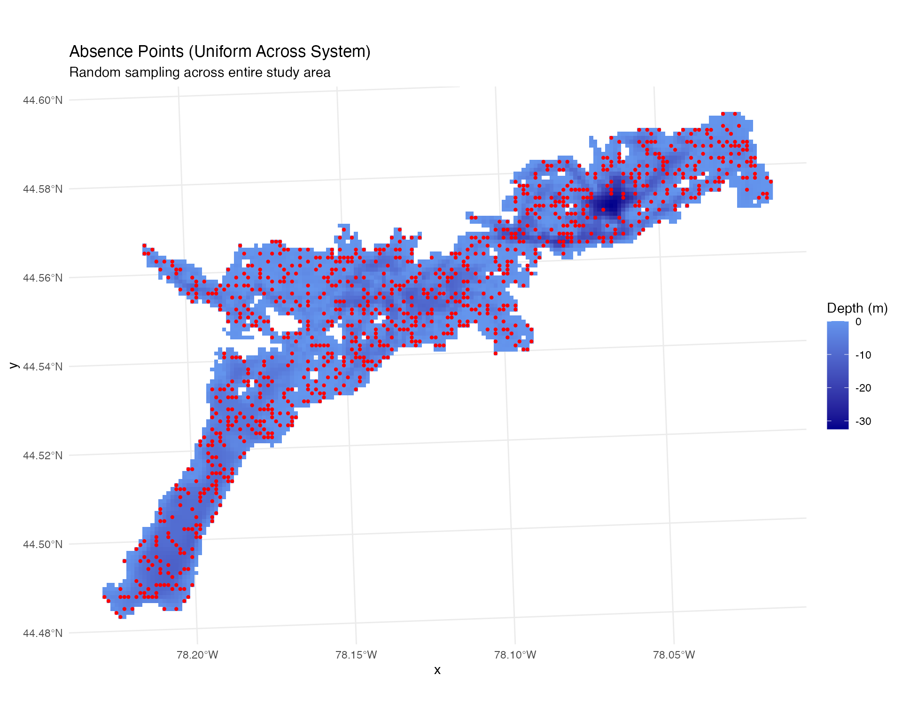
Depth Selection Analysis - Positioning
# Extract depth values
position_points$depth_m <- raster::extract(depth_raster, position_points)
absence_points_uniform$depth_m <- raster::extract(depth_raster, absence_points_uniform)
# Combine presence and absence data
# Using uniform absences for consistency with track analysis
presence_absence_points <- rbind(
position_points %>%
select(fish_id, time_period_posix, depth_m) %>%
mutate(type = "presence"),
absence_points_uniform %>%
select(fish_id, time_period_posix, depth_m) %>%
mutate(type = "absence")
)
# Create depth selection plots
p1 <- plot_depth_selection(presence_absence_points, plot_type = "density") +
ggtitle("Depth Selection",
subtitle = "Blue = presences, Red = absences")## Plotting depth selection for 20000 points
p2 <- plot_depth_comparison(
presence_absence_points,
comparison_var = "fish_id",
plot_type = "boxplot"
) +
ggtitle("Depth Selection by Individual Fish")
p1 | p2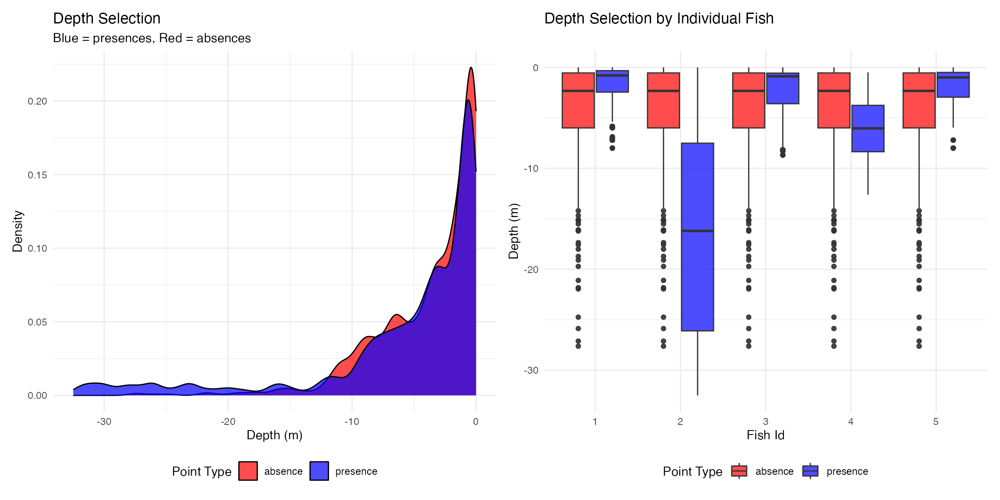
🐠 Track-Based Habitat Selection (Ground Truth)
Generate Track Presence Points
# Sample points from grid cells used by actual tracks
track_presence <- sample_points_from_track_grid(
track_data = fish_simulation$tracks,
reference_raster = depth_raster,
n_points = 1000,
crs = 32617
)## === TRACK GRID SAMPLING ===
## Grid resolution: 100 meters
## Original track data: 2405 points
## Creating grid and counting track points...
## Created 774 grid cells with track points
## After count thresholds ( 1 <=count<= Inf ): 774 cells
##
## Processing 10 fish-time combinations
## fish_id = 1, time_period_label = 2025-07-15, time_period_posix = 1752537600 : sampled 1000 points from 67 cells (total usage: 240 track points)
## fish_id = 1, time_period_label = 2025-07-16, time_period_posix = 1752624000 : sampled 1000 points from 62 cells (total usage: 241 track points)
## fish_id = 2, time_period_label = 2025-07-15, time_period_posix = 1752537600 : sampled 1000 points from 86 cells (total usage: 240 track points)
## fish_id = 2, time_period_label = 2025-07-16, time_period_posix = 1752624000 : sampled 1000 points from 68 cells (total usage: 241 track points)
## fish_id = 3, time_period_label = 2025-07-15, time_period_posix = 1752537600 : sampled 1000 points from 102 cells (total usage: 240 track points)
## fish_id = 3, time_period_label = 2025-07-16, time_period_posix = 1752624000 : sampled 1000 points from 77 cells (total usage: 241 track points)
## fish_id = 4, time_period_label = 2025-07-15, time_period_posix = 1752537600 : sampled 1000 points from 68 cells (total usage: 240 track points)
## fish_id = 4, time_period_label = 2025-07-16, time_period_posix = 1752624000 : sampled 1000 points from 85 cells (total usage: 241 track points)
## fish_id = 5, time_period_label = 2025-07-15, time_period_posix = 1752537600 : sampled 1000 points from 63 cells (total usage: 240 track points)
## fish_id = 5, time_period_label = 2025-07-16, time_period_posix = 1752624000 : sampled 1000 points from 96 cells (total usage: 241 track points)
##
## === SAMPLING SUMMARY ===
## Total points sampled: 10000
## Grid resolution: 100 meters
## Fish ID(s): 1, 2, 3, 4, 5
## Time periods: 2
## Groups: 10
## Usage range: 1 to 16 track points per cell
## Mean usage: 4.9 track points per cell
ggplot() +
geom_raster(data = raster_df, aes(x = x, y = y, fill = layer)) +
scale_fill_gradient(low = "blue4", high = "cornflowerblue",
na.value = "transparent", name = "Depth (m)") +
geom_sf(data = track_presence,
aes(color = count),
alpha = 0.5, size = 1) +
scale_color_viridis_c(name = "Count", option = "magma") +
coord_sf() +
theme_minimal() +
labs(title = "Track Presence Points",
subtitle = "Sampled from actual movement paths")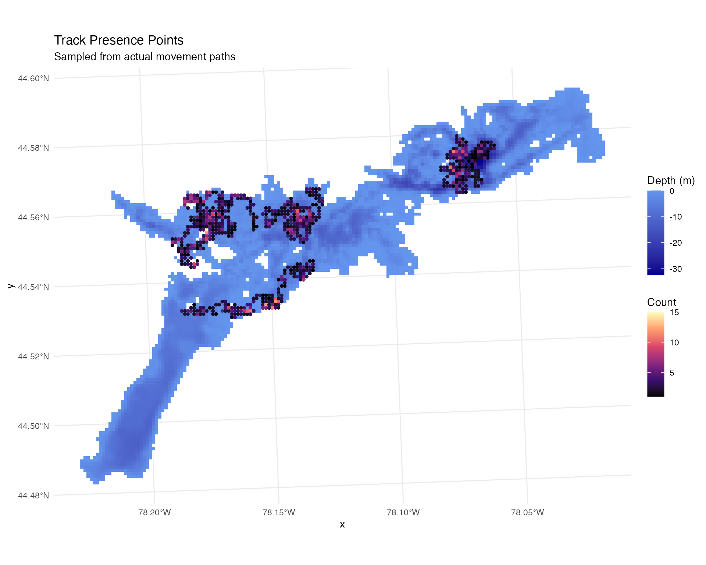
Generate Track Absence Points
# Generate absences for track-based analysis
track_absence <- sample_points_from_system_de(
system_DE,
position_points = track_presence,
n_points = 1000,
uniform = TRUE, # Uniform sampling
min_prob_threshold = 0.0, # Whole system
crs = 32617,
seed = 123
)## Using probability column: cumulative_prob
## Original data: 4818 cells
## Found 5 fish ID(s) in position_points template
## Found 2 time label(s) in position_points template
## Note: Template contains fish/time information, but system_de data lacks these columns.
## Will replicate sampling across template groups.## After probability thresholds ( 0 < prob < 1 ): 4812 cells
##
## Replicating sampling across template fish-time combinations
## Found 10 unique fish-time combinations in template
## fish_id = 1, time_period_posix = 1752537600, time_period_label = 2025-07-15 : replicated 1000 points
## fish_id = 1, time_period_posix = 1752624000, time_period_label = 2025-07-16 : replicated 1000 points
## fish_id = 2, time_period_posix = 1752537600, time_period_label = 2025-07-15 : replicated 1000 points
## fish_id = 2, time_period_posix = 1752624000, time_period_label = 2025-07-16 : replicated 1000 points
## fish_id = 3, time_period_posix = 1752537600, time_period_label = 2025-07-15 : replicated 1000 points
## fish_id = 3, time_period_posix = 1752624000, time_period_label = 2025-07-16 : replicated 1000 points
## fish_id = 4, time_period_posix = 1752537600, time_period_label = 2025-07-15 : replicated 1000 points
## fish_id = 4, time_period_posix = 1752624000, time_period_label = 2025-07-16 : replicated 1000 points
## fish_id = 5, time_period_posix = 1752537600, time_period_label = 2025-07-15 : replicated 1000 points
## fish_id = 5, time_period_posix = 1752624000, time_period_label = 2025-07-16 : replicated 1000 points
##
## === SAMPLING SUMMARY ===
## Total points sampled: 10000
## Probability column: cumulative_prob
## Groups: 10
## Sampled probability range: 0 to 0.9919
## Mean probability: 0.7442
ggplot() +
geom_raster(data = raster_df, aes(x = x, y = y, fill = layer)) +
scale_fill_gradient(low = "blue4", high = "cornflowerblue",
na.value = "transparent", name = "Depth (m)") +
geom_sf(data = track_absence %>%
filter(fish_id == 1 & time_period_label == "2025-07-15"),
alpha = 1, size = 0.8, col = "red") +
theme_minimal() +
labs(title = "Track Absence Points (Uniform Across System)",
subtitle = "Random background points for comparison")Depth Selection Analysis - Tracks
# Extract depth values for track data
track_presence$depth_m <- raster::extract(depth_raster, track_presence)
track_absence$depth_m <- raster::extract(depth_raster, track_absence)
# Combine track presence and absence data
track_presence_absence_points <- rbind(
track_presence %>%
select(fish_id, time_period_posix, depth_m) %>%
mutate(type = "presence"),
track_absence %>%
select(fish_id, time_period_posix, depth_m) %>%
mutate(type = "absence")
)
# Create track depth selection plots
p1 <- plot_depth_selection(track_presence_absence_points, plot_type = "density") +
ggtitle("Depth Selection (Track-Based Ground Truth)",
subtitle = "Blue = presences, Red = absences")## Plotting depth selection for 20000 points
p2 <- plot_depth_comparison(
track_presence_absence_points,
comparison_var = "fish_id",
plot_type = "boxplot"
) +
ggtitle("Depth Selection by Individual Fish (Tracks)")
p1 | p2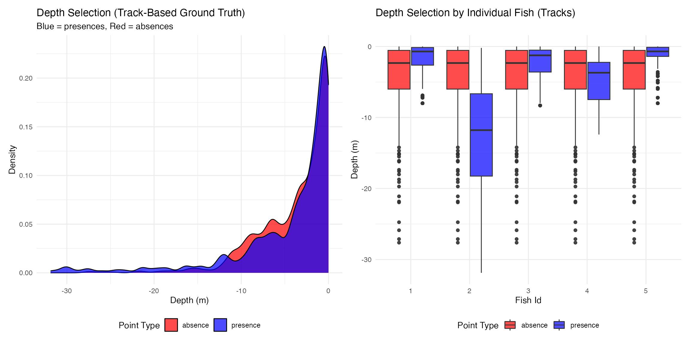
🔬 Comparative Habitat Selection Analysis
Random Forest Model Comparison
# Comprehensive comparison using Random Forests
comparative_results <- analyze_comparative_habitat_selection(
positioning_data = presence_absence_points,
space_use_data = track_presence_absence_points,
analysis_type = "both",
formula = presence ~ depth_m + fish_id + time_period_posix,
time_variable = "time_period_posix",
sample_size = 10000,
ntree = 500,
create_plots = TRUE,
create_comparison = TRUE
)## === COMPARATIVE HABITAT SELECTION ANALYSIS ===
##
## --- ANALYZING POSITIONING-BASED DATA ---
## Positioning data - Original: 20000 Complete: 20000
## Sampled 10000 points for Positioning model
## Fitting Positioning random forest model...
## Positioning Model OOB Error: 30.76 %
##
## --- ANALYZING SPACE USE-BASED DATA ---
## Actual Track data - Original: 20000 Complete: 20000
## Sampled 10000 points for Actual Track model
## Fitting Actual Track random forest model...
## Actual Track Model OOB Error: 34.89 %
##
## --- CREATING COMPARISON PLOTS ---
##
## === COMPARATIVE ANALYSIS COMPLETE ===
# Display comprehensive summary
cat("=== COMPARATIVE HABITAT SELECTION ANALYSIS ===\n\n")## === COMPARATIVE HABITAT SELECTION ANALYSIS ===
print_comparative_summary(comparative_results)## === COMPARATIVE HABITAT SELECTION SUMMARY ===
## Analysis Type: both
## Datasets Analyzed: positioning, space_use, comparison
##
## --- POSITIONING RESULTS ---
## OOB Error Rate: 30.76 %
## Sample Size Used: 10000
## Depth Range: -32.5 0
## Top Variable (MeanDecreaseGini): depth_m ( 481.707 )
## Probability Range: 0.235 0.645
## Mean Probability: 0.538
##
## --- SPACE_USE RESULTS ---
## OOB Error Rate: 34.89 %
## Sample Size Used: 10000
## Depth Range: -31.87 0
## Top Variable (MeanDecreaseGini): depth_m ( 302.84 )
## Probability Range: 0.307 0.681
## Mean Probability: 0.564
##
## --- COMPARISON STATISTICS ---
## Mean Difference (Pos - Space): -0.0271
## Mean Absolute Difference: 0.0643
## Maximum Difference: 0.3129
## Correlation: 0.4351
##
## === SUMMARY COMPLETE ===Visualize Comparative Results
# Plot all comparative results
plot_comparative_results(comparative_results, plot_type = "comparison")##
## Comparison plots: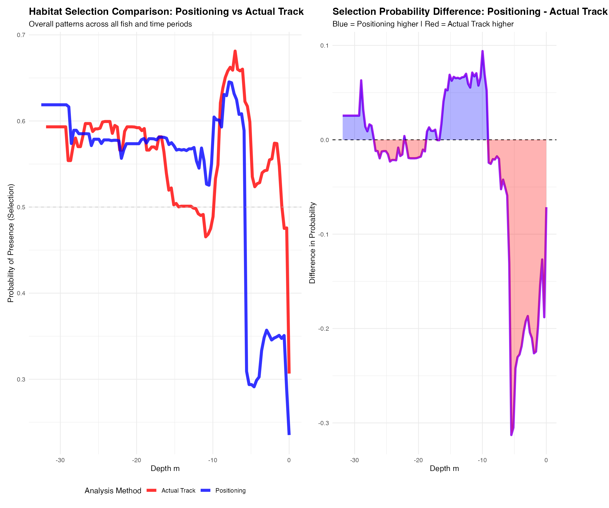
📋 Summary & Conclusions
Key Takeaways
Here we’ve used a simulation based dataset to conduct WADE positioning, which produces useful outputs for assessing space use (home range) and habitat selection from acoustic telemetry data.
There are a variety of options for the WADE algorithm in how the data are processed (e.g., normalizing station detection ranges, weighting of detections vs non-detecting receivers, threshold cut offs for positioning). Conducting simulation-based analysis within your system can aid in determining the optimal approaches relative to system design, detection efficiency, and animal behaviour by comparing the accuracy of positioning outputs with the known track data.
Tools for generating reasonable detection range models that integrate depth are provided, although it is much more optimal to use real detection range data and models to inform this. Detection range varies considerably over space and time due to variation in environmental conditions.